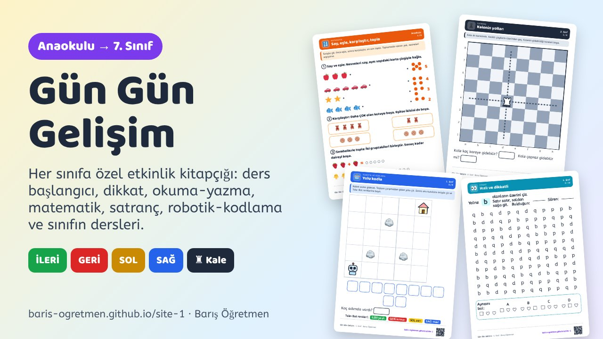

🧭 Her kitapçıkta
🌤️ Ders başlangıcıNefes, ritim, hafıza ısınması, "bugün neler yapacağız".
🔎 DikkatHedefi tara, aynısını bul.
🔤 Okuma-yazmaAnaokulunda ses-resim, 1–2. sınıfta hece, sonra metin ve sorular.
🔢 MatematikÖnce karşılaştır (çok, az, eşit), sonra sembollerle topla; üst sınıflarda sınıf konusu.
♟️ SatrançKalenin yolları; engeller ve en kısa yol.
🤖 Robotik-kodlamaOk kartlarıyla yol bul.
İLERİ (yukarı)GERİ (aşağı)SOLSAĞ
📚 Sınıfın dersleriHayat bilgisi, fen, sosyal, İngilizce: birer sayfa.
🎮 Oyun Zamanı5 büyük düğme: dikkat, okuma, matematik, satranç, robotik.
👀 Sınıfına göre örnek sayfalar
Her sınıftan 4 örnek sayfa ("ÖRNEKTİR" damgalı). Dokun, PDF açılsın.
🧸AnaokuluÖrnek · 4 sayfaTamamı 9 sayfa🎒1. SınıfÖrnek · 4 sayfaTamamı 9 sayfa✏️2. SınıfÖrnek · 4 sayfaTamamı 10 sayfa🔬3. SınıfÖrnek · 4 sayfaTamamı 11 sayfa🌍4. SınıfÖrnek · 4 sayfaTamamı 11 sayfa🧪5. SınıfÖrnek · 4 sayfaTamamı 11 sayfa🧭6. SınıfÖrnek · 4 sayfaTamamı 11 sayfa🚀7. SınıfÖrnek · 4 sayfaTamamı 11 sayfa
✉️ Kitapçıkların tamamı için
Tamamını isteyin
✉️ barilkay466@gmail.comSitede yalnızca örnek sayfalar var. Kitapçıkların tamamı, okul ve kurum fiyatı için yazın.